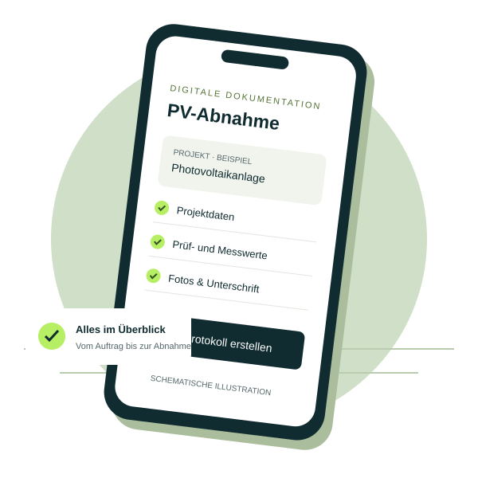

01
ELEKTRO
VDE Messprotokoll Neutral
Elektrische Prüfungen übersichtlich dokumentieren. Ein digitales Werkzeug für die Arbeit im Elektrofachbetrieb.
DIGITALE WERKZEUGE FÜR DIE PRAXIS
Weniger Papier. Mehr Überblick. Entdecken Sie digitale Helfer für Dokumentation, Abnahme und Service – entwickelt von Frank Seeliger.
Für den Arbeitsalltag gedacht. Persönlich betreut.

Digital dokumentieren. Klar übergeben.
DAS APP-PORTFOLIO
Vom Prüfprotokoll bis zur Wartung: Entdecken Sie Apps für wiederkehrende Aufgaben in Ihrem Betrieb.
ELEKTRO
Elektrische Prüfungen übersichtlich dokumentieren. Ein digitales Werkzeug für die Arbeit im Elektrofachbetrieb.
PHOTOVOLTAIK
PV-Anlagen strukturiert abnehmen: Projektdaten, Messwerte, Checklisten, Fotos und Unterschrift in einem PDF-Protokoll.
BAU & HANDWERK
Baustellenabnahmen strukturiert festhalten und die Dokumentation rund um das Bauprojekt organisieren.
INSTALLATION
Eine praktische Unterstützung für Aufgaben rund um die Installation. Details zum Funktionsumfang erhalten Sie auf Anfrage.
WARTUNG & SERVICE
Wartungsarbeiten nachvollziehbar dokumentieren und Informationen für den nächsten Service bereitstellen.
Sie haben eine Aufgabe, für die es noch keine passende Lösung gibt?
Gemeinsam starten ↗Verfügbarkeit, Geräteunterstützung und aktuelle Funktionen bitte im jeweiligen App-Store-Eintrag prüfen oder direkt erfragen.
INDIVIDUELLE APP-ENTWICKLUNG
Eine Checkliste, die wirklich zu Ihrem Auftrag passt. Ein Bericht, der Ihre Informationen enthält. Gemeinsam entwickeln wir eine Lösung für Ihren Arbeitsalltag.
App-Idee per E-Mail besprechen ↗Was kostet Zeit? Was soll einfacher werden? Wir besprechen Ihren Ablauf.
Checklisten, Prüfprotokolle, Wartungsberichte oder Baustellendokumentation.
Umfang und Umsetzung werden passend zu Ihrem Bedarf abgestimmt.
DER MENSCH HINTER DEN APPS
Ich bin Frank Seeliger aus Gehrden und entwickle Apps für Elektro-, PV- und Handwerksbetriebe.
Mein Fokus liegt auf digitalen Werkzeugen, die betriebliche Abläufe verständlich abbilden. Ob bestehende App oder individuelle Idee: Sie sprechen direkt mit dem Entwickler.
Lernen wir uns kennen ↗KONTAKT
Schreiben Sie mir oder rufen Sie an. Ich freue mich darauf, mehr über Ihre Aufgabe zu erfahren.
Frank Seeliger
30989 Gehrden
Rechtliche Informationen
Impressum ↗Datenschutz ↗Vorlagen – vor Veröffentlichung ergänzen und prüfen.